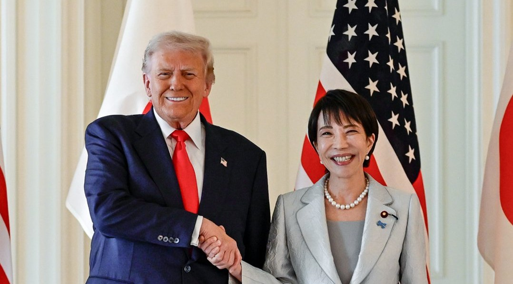

[한일언론포럼 후기②] "일본은 한국만 남았다", 그 말이 1년 만에 사실이 됐다
2025년 9월 도쿄 포럼 질의응답, 학자는 제도를 말하고 기자는 현실을 말했다
타이완 유사시 협력을 묻는 일본에 한국 기자들은 방공식별구역과 국민정서로 답했다
그로부터 여섯 주 뒤 일본 총리가 타이완을 꺼냈고, 1년 뒤 중국은 직함을 뺐다
2025년 9월 24일 도쿄 와세다대학 한일언론포럼. 제1세션에서 학자들이 '실용'을 말했다면 질의응답에서는 기자들이 '현실'을 말했다. 일본 언론인들이 묻고 한국 기자들이 직설로 답했다. 그리고 침묵이 흘렀다. 그 자리에서 오간 말들이 1년 뒤 어떻게 됐는지가 이 기사의 뒷부분이다.

1. 일본의 물음 "한국은 정말 바뀌었나"
마이니치신문 사와다 논설위원이 물었다. "이재명 정권은 실용외교를 표방하고 있습니다. 그런데 한겨레, 경향신문 같은 진보언론 사설을 보면 과거처럼 강한 비판이 아니라 '아쉽다' 정도입니다. 왜 이렇게 억제적입니까? 실용외교를 긍정해서입니까, 아니면 민주당 정권이기 때문입니까?"
정권이 바뀌어도 한국의 대일 정책이 이어진다는 데 대한 안도와 확인이 묻은 물음이었다.
도쿄신문 사사가세 기자도 물었다. "한일이 전략적 파트너로 협력해야 한다는 말씀이 나왔습니다. 지금 이 시점에서 안보 측면에서 어느 정도 협력이 가능하다고 보십니까?"
2. "일본은 북중러와 다 안 좋고 한국만 남았다"
인천투데이 김갑봉 편집국장이 답했다.
"한국은 내란 직후 불안한 시기를 지나고 있습니다. 한일정상회담은 불만이 있었지만, 한미정상회담을 앞두고 참았습니다. 한미정상회담이 중요했기 때문입니다."
이어 본질을 짚었다. "일본은 북한, 중국, 러시아와 다 안 좋고 한국하고만 남았습니다. 지소미아도 한국이 먼저 정보를 취득하기 때문에 일본이 필요해서 요청한 겁니다."
정적이 흘렀다. 그는 역사 인식을 정면으로 꺼냈다.
"고하리 교수님은 독일 비교가 무의미하다고 하셨지만, 독일 빌리 브란트 총리는 바르샤바에서 무릎을 꿇었습니다. 그것이 유럽 통합의 출발이었습니다. 일본이 동북아 경제공동체의 중심국가가 되려면 과거를 직시해야 합니다."
통역이 끝나자 일본 기자들은 고개를 숙였다. 사회자인 진창수 전 오사카 총영사가 "좋은 말씀"이라고 짧게 정리하고 다음으로 넘어갔다.
3. 일본의 불안 "타이완 유사시 한국은"
제2세션에서 요미우리신문 토요오라 기자가 안보를 꺼냈다. "동아시아에는 두 개의 위기가 있습니다. 북핵과 타이완 해협입니다. 일본은 두 위기를 동시에 떠안고 있습니다. 타이완 유사시 일본 경제는 반년간 마비될 것입니다."
NHK 요시카와 기자가 덧붙였다. "주한미군 관계자가 말하길, 한국은 감정적으로 타이완 사태 대비가 안 돼 있어 논의 자체가 어렵다고 했습니다. 미군도 한국 국민 감정을 고려하면 전면 개입은 어렵다고 했습니다."
4. 한국의 답 "방공식별구역 때문에 일본기는 못 들어온다"
OBS 갈태웅 기자가 구체적인 현실을 말했다.
"한국 방공식별구역(KADIZ) 때문에 일본 전투기가 한국 영공에 진입하는 건 제한됩니다. 2019년 러시아 조기경보기가 독도 영공을 침범했을 때, 한국 전투기는 대구에서 출격해 플레어와 기총까지 쐈지만 일본 전투기는 나가지 못했습니다. KADIZ에 들어가는 순간 한국 전투기가 출격하기 때문입니다."
작전계획 변경도 짚었다. "한미 작전계획이 5027에서 5015로, 작년에는 3600으로 바뀌었습니다. 과거 지연 작전에서 선제 타격 개념으로 바뀌면서 한미일 훈련 개념 자체가 일치하지 않습니다. 한미일 훈련은 해상·공중에만 국한되고, 제주 남쪽 방공식별구역 중첩 구간에서만 진행됩니다."
KBS 윤지은 기자는 선을 그었다. "경제협력은 먹고 사는 문제지만, 안보는 죽고 사는 문제입니다. 한미일 군사협력은 미국을 중심으로 가능하지만, 미국이 빠진 한일 군사협력은 가까운 미래에 어렵습니다. 한일 동맹이라는 단어 자체에 한국은 거부감이 있습니다."
윤 기자는 주한미군의 전략적 유연성도 꺼냈다. "한반도 전구와 태평양 전구를 하나로 묶자는 일본 방위상 제안에 미국이 긍정적으로 반응했다는 보도가 있었습니다. 한반도 안보가 일본 중심 인태 전략의 하위 변수로 끌려가면 북한·중국 견제는 어떻게 되느냐는 우려입니다."
5. 양쪽에 던진 주문
아사히신문 하코다 논설위원은 언론의 몫을 말했다. "한일관계가 안 좋아지면 페이크 뉴스가 확산될 것입니다. 귀멸의 칼날이 욱일기와 비슷하다는 식의 규탄형 보도는 양국 모두 조심해야 합니다."
일본 언론의 책임도 들었다. "조세이 탄광에서 강제 징용된 한국인 유골이 발견됐습니다. 이런 문제를 일본 언론이 더 보도해야 합니다. BC급 전범 한국인 보상 문제도 매년 법안이 나오지만 폐기됩니다."
한국 언론에도 주문했다. "'진정한 사과가 없었다'는 표현은 조심해주셨으면 합니다. 일본도 1993년 고노 담화, 1995년 무라야마 담화, 1998년 김대중-오부치 선언에서 사죄했습니다."
프리랜서 기자 나리카와는 다른 결의 말을 했다. "제가 한국에서 가장 발언하기 어려운 것이 독도 문제입니다. '잘 모른다'고 해도 한국 분들이 싫어하십니다. 그래서 아무 말도 못하는 주제입니다."
그는 부산영화제에서 본 다큐멘터리를 소개했다. "한국 감독이 독도 경비대원을 다룬 다큐를 만들었습니다. 그 감독은 일본 영화대학에서 공부했고, 일본 오키섬에 일본인 아내, 자녀와 살면서 주민 입장에서 독도를 바라봤습니다. 할아버지 세대 때는 제주 해녀와 함께 전복을 잡으러 갔다는 이야기도 나옵니다."
6. 그 말들이 1년 뒤 어떻게 됐나
포럼에서 나온 말 가운데 1년 사이 사실로 굳은 것이 있다.
첫째, "일본은 북중러와 다 안 좋고 한국하고만 남았다"는 진단이다. 2025년 11월 7일 다카이치 사나에 총리가 중의원에서 타이완 유사시 집단자위권을 쓸 수 있다는 취지로 말한 뒤 중일관계는 내려갔다. 2026년 9월 30일 중국 외교부 정례브리핑에서는 궈자쿤 부대변인이 그를 직함 없이 '다카이치 사나에'라고만 불렀다. 외교부 기록에도 직함이 없었다. 고이즈미 준이치로 전 총리가 야스쿠니를 참배하던 시절에도 중국은 직함을 빼지 않았다. 2026년 11월 중국 선전 APEC에서 중일정상회담이 열릴지는 확인되지 않았다.
그사이 한일은 여섯 차례 정상이 오갔다. 2026년 1월 13일 이재명 대통령이 일본을, 5월 19일 다카이치 총리가 경북 안동을 찾았다. 10월 15일 방콕에서 100억달러 통화스왑을 2029년 11월까지 늘렸다. 일본이 기댄 곳은 한국뿐이라는 말이 숫자로 확인됐다.
둘째, 타이완 문제는 포럼 여섯 주 뒤 일본 총리의 입에서 나왔다. 포럼에서 일본 기자들이 "협력할 수 있는 부분은 협력하되 비판은 하지 않는 게 필요하다"고 했던 그 사안이다. 한국 기자들이 말한 국민 정서와 방공식별구역의 벽은 그대로다. 미국 안에서는 타이완 유사시 주한미군 기지 활용 논의가 공개적으로 나왔다.
셋째, 하코다 논설위원이 "일본 언론이 더 보도해야 한다"고 한 조세이 탄광 유골과 BC급 전범 보상에서 진전이 있었는지는 확인하지 못했다. 사도광산의 강제노동 표기도 바뀌지 않았다.
넷째, 다카이치 총리는 2025년 10월 가을 예대제와 2026년 4월 봄 예대제, 2026년 8월 15일 패전일에 야스쿠니를 참배하지 않고 공물만 봉납했다. 그러나 같은 날 고이즈미 신지로 방위상과 자민당 간부들이 참배했고, 2026년 8월 4일 첫 방위백서는 독도를 22년째 일본 땅이라고 적었다.
포럼의 침묵이 전한 것은 간극의 깊이였다. 1년이 지나 그 간극은 메워지지 않았고, 다만 일본이 기댈 곳이 더 줄었다.
참고문헌
·"한일 언론포럼 세션1·2 녹취록", 2025년 9월 24일, 도쿄 와세다대학.
·"中, 다카이치 '총리' 호칭 뺐다…중국이 日총리 이름만 부른 이유", 아시아경제, 2026년 10월 3일. https://view.asiae.co.kr/article/2026100313073201058
·"한일, 100억弗 규모 통화스와프 3년 연장", 파이낸셜뉴스, 2026년 10월 15일.
·"한일 정상 '고향 셔틀외교'… 19일 안동서 만난다", 파이낸셜뉴스, 2026년 5월 17일.
·"다카이치, 야스쿠니 신사 참배 대신 공물… 日방위상·자민당 간부들은 참배", 한국일보, 2026년 8월 15일.
·"다카이치 첫 방위백서에 '독도는 일본 땅'…22년째 억지 주장", 경향신문, 2026년 8월 4일.
·빌리 브란트 바르샤바 게토 무릎 꿇기, 1970년 12월 7일. https://www.willy-brandt.de/themen/kniefall-von-warschau
·고노 담화, 1993년 8월 4일. https://www.mofa.go.jp/policy/women/fund/state9308.html
·무라야마 담화, 1995년 8월 15일. https://www.mofa.go.jp/announce/press/pm/murayama/9508.html
·"조세이 탄광 추도", Japan Times, 2025년 2월 1일.